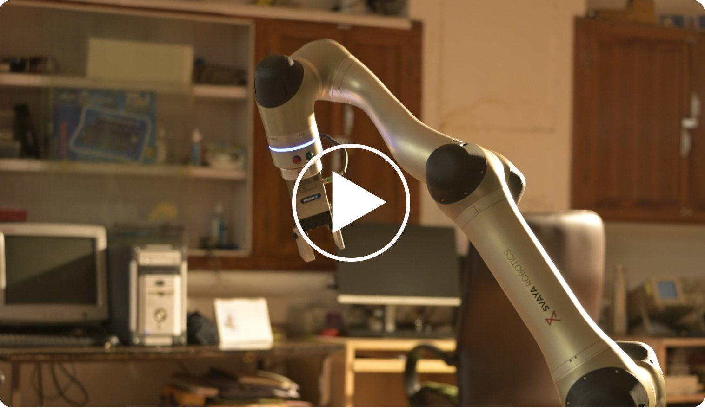
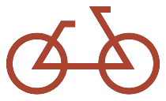
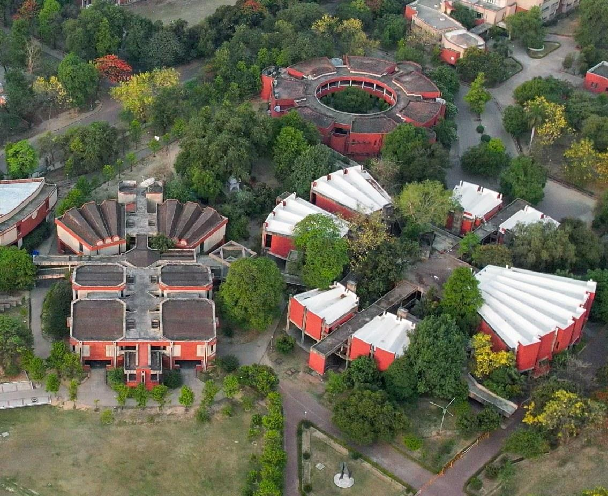
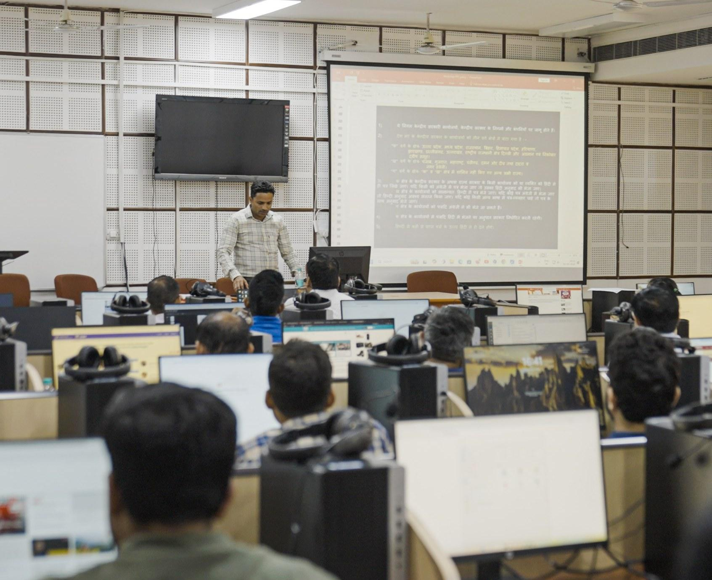
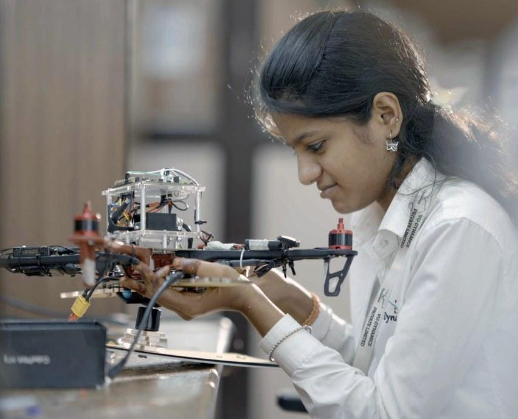

The Campaign

Greater Than Us
For over six decades, IIT Kanpur has expanded the boundaries of knowledge, innovation, and public impact.
The story continues because every generation chooses to carry it forward.
Investing In The Future
IIT Kanpur is embarking on a bold journey to redefine excellence in education, research, and innovation. With an ambitious vision for the future, the institute aims to raise $600 million over the next three years to drive groundbreaking advancements and global impact. This transformative initiative is a collective effort, with 40% of the funding supported by the Institute and Government, 50% contributed by alumni, and 10% from other donors, including corporate partners through CSR initiatives.
The investment is strategically distributed across three key areas: Infrastructure, to expand and modernize academic and research facilities; Programs, to strengthen faculty and student support through scholarships and fellowships; and Key Focus Areas, fostering innovation in AI, sustainability, healthcare, and deep-tech entrepreneurship. This vision is not just about funding - it is about shaping the future of IIT Kanpur as a global leader in education and research.
Join us in this mission to build a legacy of excellence and innovation.

Give to our three priorities

Every hall, lab, and residence at IIT Kanpur was built by someone who believed the institution was worth building for.
That work isn't finished. Foundation funds the physical campus, halls of residence, research facilities, the spaces where the next sixty years get made. This is the ground the rest of the campaign stands on.
IIT Kanpur's real infrastructure has always been its people, the faculty who choose to stay and build here, the students who couldn't otherwise afford to.
Talent funds the humans: scholarships that remove the barrier, fellowships that back someone at exactly the right moment, chairs that keep the best minds from leaving.


Quantum computing, semiconductor packaging, drug discovery, next-generation medical technology, some problems don't have a playbook yet.
IIT Kanpur works without a map here, because someone has to go first. Frontier funds the work with no precedent. It's the riskiest money in the campaign, and the most consequential.
A legacy built
through generations

Circle of Leadership
The Greater Than Us campaign is led by alumni and institutional leaders who believe in the enduring impact of IIT Kanpur. By bringing together the community, advancing the campaign's vision, and championing its priorities, they help ensure that the next chapter of IIT Kanpur is as ambitious as those that came before it.
Together, they represent the spirit at the heart of this campaign: building something greater than ourselves.
- Mr. Rakesh GangwalAlumni
- Dr. Romesh WadhwaniNon-Alumni
- Mr. Rahul GautamAlumni
- Mr. Bhadresh ShahAlumni
- Mr. Lokvir KapoorAlumni
- Mrs. Vinita Pant & Mr. Muktesh PantAlumni
- Mr. Narayana MurthyAlumni
- Mr. Hemant JalanAlumni
- Mr. Sudhakar KesavanAlumni
- Mr. Anil BansalAlumni
- Dr. Dev JonejaAlumni
- Mr. Rahul MehtaNon-Alumni
- Late Dr. Ranjit SinghAlumni
- Mr. Jagjeet Singh BindraAlumni
- Mr. Prashant JainAlumni
- Prof. Chandralekha Singh & Prof. Jeremy LevyNon-Alumni
- Mr. Vikram TannanAlumni
- Mrs. Nirmala Jay Pullur & Late Mr. Jay PullurAlumni
- Dr. BVR Mohan ReddyAlumni
- Mr. Pawan TewariAlumni
- Dr. Deepak Mohan NarulaAlumni
- Mr. Prasad ChintamaneniAlumni
- Mr. Suresh BazajAlumni
- Ms. Asha Jadeja & Late Prof. Rajeev MotwaniAlumni
- Dr. Prabhakar GoelAlumni
- Mr. Ashish KarandikarAlumni
- Mr. Srinath AnantharamanAlumni
- Late Mr. Kushal SachetiAlumni
- Late Dr. Rathin DattaAlumni
- Mr. Sudhir Mohan MittalAlumni
- Mr. Alok AgarwalAlumni
- Prof. Sandip TiwariAlumni
- Dr. Shishpal SinghAlumni
- Prof. Jainendra NavlakhaAlumni
- Mrs. Nidhi Gupta & Dr. Naresh Chand GuptaAlumni
- Mr. Rakesh RawalAlumni
- Dr. Rajeev GautamAlumni
- Mr. Manoj SinghAlumni
- Ms. Madhu Saxena & Dr. Ashok SaxenaAlumni
- Mr. Ashish BhatiaAlumni
- Mr. Nilesh ParateAlumni
- Mr. Ranodeb RoyAlumni
- Mr. Rajiv BatraAlumni
- Mr. Ajay DubeyAlumni
- Dr. Devendra ShuklaAlumni
- Mr. Rao Remala & Mrs. Satya RemalaAlumni
- Mr. Kamal KarmakarNon-Alumni
- Dr. Manas MandalAlumni
The next chapter has not been written yet.
It belongs to all of us.